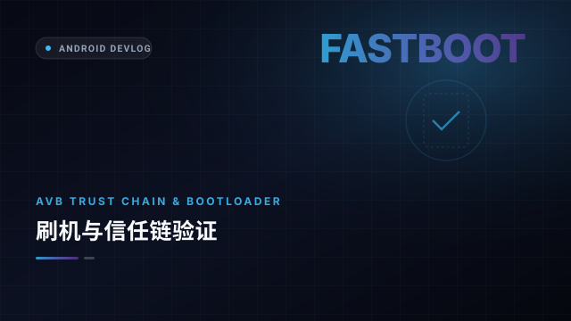

刷机为什么会卡开机：验证启动的信任链从哪开始
修改系统分区后卡在开机界面，根源往往不在于镜像刷错位置，而在于触发了启动校验拦截。本文梳理 Android 验证启动（AVB 2.0）的哈希信任链、Android 13 的引导分区拆分逻辑，以及不同锁态机型在双分区架构下的安全更新机制。

问题：改完分区开不了机
刷机在操作层面上拆开来看很简单：把镜像文件写进对应的存储分区。真正容易出问题的，是写完之后设备能不能顺利开机。
当年给 K60 Pro 打第一个 Root 补丁时，我按早期教程把修补后的镜像刷进了 boot 分区，重启之后什么都没有发生——权限没拿到，系统照常运行。换成 init_boot 分区才成功。那次既没报错也没弹窗，只是安静地没有生效。
另一种情况更棘手：机器能通电，但卡在厂商 Logo 界面反复重启。这通常不是镜像刷错了位置，而是没有通过启动校验。
方案：先弄清楚信任链从哪开始
这背后其实对应着两个独立环节：镜像通过什么底层通道写入闪存，以及设备启动时依据什么机制校验它的合法性。
写入通道有层级之分。 常规刷机使用的是 Fastboot 模式，它运行在系统引导程序（Bootloader）之上，前提是引导分区本身完好无损。若引导分区也已损坏，高通平台还留有一条更底层的应急通道——9008（EDL 紧急下载）模式。该模式由芯片出厂固化在只读存储器（BootROM）中的底层代码驱动：连接电脑识别出 Qualcomm HS-USB QDLoader 9008 端口后，先通过握手机制（Sahara 协议）将烧录引导程序（Firehose 编程器）载入设备内存运行，随后即可绕过整个操作系统，按指令直接读写或擦除闪存分区。正因为它独立于系统分区之外，即便设备无法正常引导，通常也能借此恢复。
能否正常开机，取决于验证启动的信任链。 Android 8.0 起引入了 AVB 2.0（Android Verified Boot，验证启动机制），将分散的校验信息集中收敛到 vbmeta 分区——其中记录了各关键分区的哈希摘要与厂商数字签名。开机时，Bootloader 只需用硬件固化的公钥验证 vbmeta 自身的签名；验证通过后，便以其中记录的哈希值为基准，逐一比对 boot、init_boot、dtbo（设备树配置）等引导分区。至于 system、vendor 等体积庞大的系统分区，则采用哈希树机制（dm-verity），不仅在启动阶段校验，系统运行期间读取数据块时也会持续核对完整性。
在此基础上，Android 13 进一步拆分了引导分区。 为推行通用内核镜像（GKI）架构，Android 13 将原本与内核打包在一起的通用初始内存盘（ramdisk）从 boot 分区剥离，独立为 init_boot 分区。拆分后，boot 分区主要存放通用内核本体，而系统第一阶段的初始化程序（init）与启动脚本则移至 init_boot。由于主流修补方案主要介入初始化阶段，新机型打补丁的目标分区也随之从 boot 转向了 init_boot。
几条机制串联起来就清楚了：Root 补丁修改了 init_boot 的内容，内容一变哈希摘要就会改变；开机时 Bootloader 拿着 vbmeta 里记录的旧哈希去比对，发现不匹配便会拒绝启动。正确的流程是：改动下游分区后，必须同步重算哈希并重新签名 vbmeta（或按规范关闭对应校验），再一并写回。
现代设备生态的四种真实锁态
结合实际机型来看，当前 Android 设备围绕启动校验大致分化出四种状态：
- 常规解锁（真解锁）设备：以小米 K60 Pro 等官方开放解锁的机型为代表。解锁后引导程序（ABL）的锁标志位被改写，允许加载未经原厂签名的分区镜像；但设备启动时会触发橙色安全告警（Orange 状态），系统属性（
ro.boot.flash.locked=0）与硬件密钥认证服务（KeyMint）也会如实向应用层报告“已解锁”状态。 - 可自签设备：以联想拯救者 Y700 系列平板为代表。这类机型的原厂引导链默认信任 Android 开源项目公开的测试密钥（AOSP testkey）。只要使用该公开密钥对修改后的
init_boot与vbmeta分区重新签名，设备在保持原厂未解锁状态下即可通过启动校验，开机仍维持代表完全受信任的绿色状态（Green）。 - 假回锁（Fake Lock）设备：常见于关闭了官方解锁通道的部分高通机型。其思路是利用底层引导漏洞，在系统与硬件可信执行环境（TEE）读取锁状态之前的极早期引导阶段注入内存补丁，将内存中的引导状态覆写为“已锁定且受信任（Locked & Green）”，从而在保留硬件级锁定信任状态的同时，放行修补后的内核镜像。
- 运行时临时提权设备：不改动任何引导分区，仅依靠系统运行期的内核或用户态漏洞临时获取权限（往往伴随将 SELinux 安全策略降级为宽容模式），一旦重启即恢复原状。
A/B 槽位与保留锁态 OTA 的升级链路
现代 Android 普遍采用 A/B 无缝更新机制，闪存中并存主、备两套系统分区槽位（_a 与 _b）。系统后台下载全量 OTA 更新时，会将新版本完整写入当前闲置的备用槽位，原厂未修改的引导程序（ABL）与 init_boot 也会一并覆盖该槽位。
对于依赖引导补丁的假回锁设备而言，若更新写完后直接重启切换槽位，不仅备用槽的原厂引导程序会导致假回锁补丁与 Root 权限双双失效，未修补的严格校验还会拦截分区改动痕迹，导致设备无法正常启动。
因此，这类设备在线更新时必须在后台写入完成、尚未重启切槽的窗口期完成两步衔接：
- 先补引导层：使用专用引导维护工具向备用槽位的引导与 EFI 相关分区重新写入锁态补丁；
- 再补内核层：打开 KernelSU 等内核管理器，通过“安装到未使用的槽位（OTA 后）”功能修补备用槽的
init_boot； - 待引导层与内核层均对齐后，再安全重启切换槽位。
核心难点与工程排障
- 补丁必须对应正确的引导分区。 Android 13 及以上采用 GKI 架构的设备通常修补
init_boot，更早的分区布局则修补boot。刷错分区往往不会直接报错，而是静默失效或卡在开机界面；判断方法很直接——解压官方固件包，查看其中是否包含init_boot.img。 - 修补镜像必须与系统小版本严格对应。 每次系统升级都可能更新引导脚本或安全补丁级别，混刷旧版本的
init_boot镜像容易引发无线模块失效或无法开机，每次更新都应基于同版本原厂固件重新提取修补。 - 修改分区后须同步处理校验。 未重新签名
vbmeta且未显式关闭校验时，Bootloader 会直接阻断启动。 - 双分区机型操作前需确认当前活动槽位。 镜像若误刷入非活动槽位，重启后并不会加载生效；非 OTA 升级期间也不应随意切换活动槽位或向备用槽写入补丁，以免破坏备用分区的可回滚状态。
- 基带与校准分区须提前单独备份。
persist分区保存传感器标定数据，modem分区关系到蜂窝信号与基带通信，这两类分区一旦损坏或丢失，无法通过常规恢复出厂设置补回。 - 9008 端口无法识别多源于连接链路与驱动。 电脑未能识别出底层端口时，通常并非设备芯片损坏，优先排查三处常见原因：高通底层驱动未正确签名安装、使用了仅支持充电的线材，或机箱前置接口及扩展坞存在通信不稳。
- 重新上锁前须确保全部分区恢复原厂签名状态。 若分区仍残留未受信任的修改便强行锁定 Bootloader，验证启动将直接阻断引导流程，导致设备无法开机。
结论
刷机在操作层面上只是将镜像写入分区，但设备能否正常启动则取决于验证启动机制：以硬件公钥为信任根、以 vbmeta 为校验枢纽，任何下游分区的改动都必须同步更新上游的哈希与签名。理清这条信任链后，大多数“刷完卡开机”的现象都能顺藤摸瓜定位到具体环节。
从常规解锁、测试密钥自签到引导期假回锁，定制方案虽在不断演进，底层逻辑却始终未变：谁能介入启动链更早期的阶段，谁就能决定系统所采信的设备状态；而固化在芯片底层的 9008 模式则是最后的兜底防线——只要硬件底层通信尚存，绝大多数引导故障都仍有恢复余地。